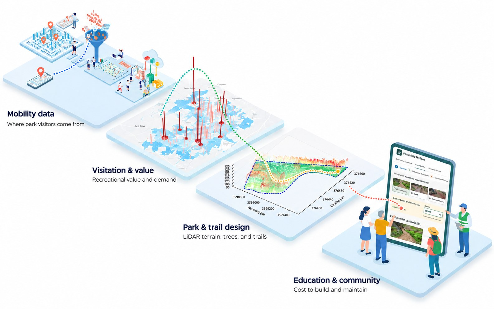

From Park Visitation Data to Landscape Design and Education
How I turn evidence about how people use parks into designs, and into tools that help communities plan, build, and maintain them.

1Data
Smartphone mobility data shows where park visitors come from, and when.
Advan · 200+ Austin parks2Analysis
Seasonal patterns, the facilities people prefer, and who visits.
Seasons · facilities · demographics3Design
Which design choices make parks more used and more attractive.
Trees · trails · amenities4Education
A feasibility toolkit and visual tools show what each design option costs to build and maintain.
Cost · maintenance · visuals5Community
Through Texas A&M AgriLife’s WOW-E program, I use these tools with rural Texas communities to plan parks and trails.
Harrison County · Alto